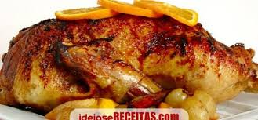

Receita Pato com laranja
Modo de preparo

Descasque as batatas e cozinhe até ficarem al dente. Retire toda casca.
Ingredientes
- 1 pato inteiro limpo
- 500g de batata pequena
- Suco de 3 laranjas
- Suco de 1 limão
- 100g de açucar
- 12 xicaras de óleo
- Pimenta do reino
- Sal
- 20g de salsinha picada